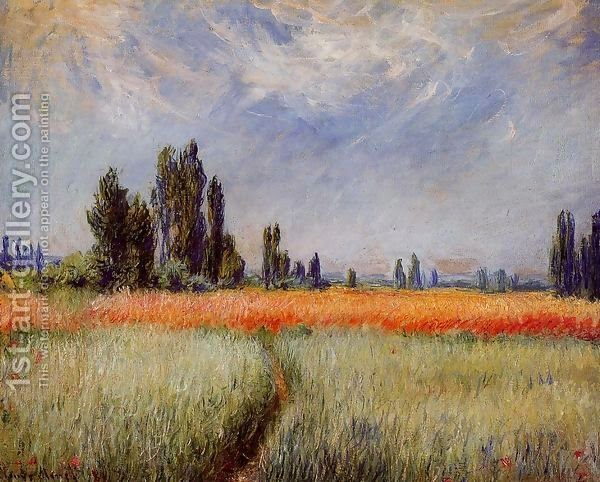

Sukkah 41 - Remembering the Temple and building it again
The Sukkot bunch is taken and waved on the first day of Sukkot only, but in the Temple it is done all seven days. The Torah said, "on Sukkot take the bunch and rejoice for seven days before God" - that is, do it once, but in the Temple - all seven days. After the Temple was destroyed, Rabbi Yochanan ben Zakkai decreed to take the bunch all seven days, to remember how it was done in the Temple.
What is the source for the idea to remember the Temple? - Since Jeremiah said, "This is Zion, nobody is looking for it," we see that there is a mitzvah to look for and remember the Temple.
He also decreed to keep the Temple in mind on the day after Passover, when the Omer offering used to be brought. This offering permits newly grown wheat to be eaten . The confusion may arise on the year when the Temple is built, and to prevent it, Rabbi Yochanan delayed the eating of the new grain for one day.
However, how can the confusion arise at all? If the Temple is built after the 16th of Nissan, then the new wheat is already permitted. And even if it is built before, the new grain should be allowed right after midday, because if the Temple stands, then they would bring the Omer already.
The answer is that the Temple may be built at night on the sixteenth, or just before sundown on the fifteenth. But this time is either night or a holiday, and one cannot build the Temple at these times!? - True, but this applies only to the first two Temples, whereas the third one will come down miraculously from Heaven, following the verse, " The Sanctuary, my God, that Your hands established ." Others explain this differently.
Art: The Wheat Field by Claude Oscar Monet